Лабораторна робота · 02
Лабораторна робота 2
Тема та мета
Тема: Розгалужені обчислювальні процеси.
Мета: Вивчити особливості розгалужених обчислювальних процесів. Опанувати технологію використання логічних операторів.
Умова завдань
Завдання 1
Визначити значення функції залежно від значення її аргументу, яке вводиться з клавіатури.
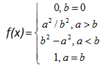
Завдання 2
Визначити умови взаємного розташування двох прямих, що задаються коефіцієнтами рівнянь виду ax + by + c = 0: паралельні, перпендикулярні, перетинаються або збігаються.
Аналіз завдань
Завдання 1
Користувач вводить значення a та b. Далі функція calculateY() порівнює значення і виконує розрахунок відповідно до потрібної гілки умови.
Завдання 2
Функція input() отримує a1, b1, c1, a2, b2, c2, а checker() перевіряє взаємне розташування прямих: збіжність, паралельність, перпендикулярність або перетин.
Блок-схеми завдань
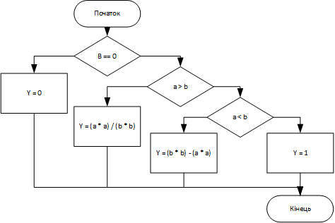
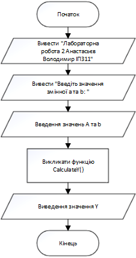
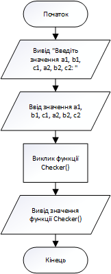
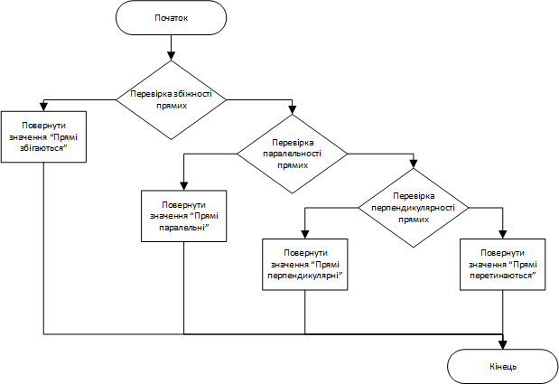
Коди програм
Завдання 2
#include <iostream>
#include <Windows.h>
using namespace std;
string checker(float a1, float b1, float c1,
float a2, float b2, float c2)
{
if (a1 * b2 == b1 * a2 &&
c1 * b2 == b1 * c2 &&
a1 * c2 == a2 * c1)
{
return "Прямі збігаються";
}
else if (a1 * b2 == b1 * a2)
{
return "Прямі паралельні";
}
else if (a1 * a2 + b1 * b2 == 0)
{
return "Прямі перпендикулярні";
}
else
{
return "Прямі перетинаються";
}
}
void input()
{
float a1, b1, c1, a2, b2, c2;
cout << "Лабораторна робота 2 Анастасьєв Володимир ІПЗ11" << endl;
cout << "Введіть значення a1: "; cin >> a1;
cout << "Введіть значення b1: "; cin >> b1;
cout << "Введіть значення c1: "; cin >> c1;
cout << "Введіть значення a2: "; cin >> a2;
cout << "Введіть значення b2: "; cin >> b2;
cout << "Введіть значення c2: "; cin >> c2;
cout << checker(a1, b1, c1, a2, b2, c2);
}
int main()
{
SetConsoleOutputCP(1251);
SetConsoleCP(1251);
input();
return 0;
}Перевірка розрахунків
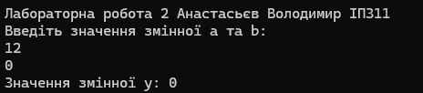
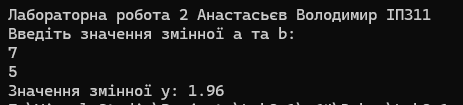
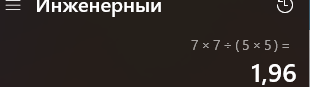
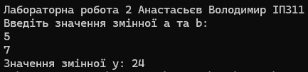
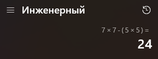
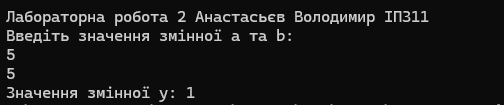
Висновки
У ході лабораторної роботи було вивчено розгалужені обчислювальні процеси та застосування умовних операторів у C++. Закріплено навички використання операторів порівняння і логічних операцій для вибору потрібної гілки алгоритму. Під час аналізу завдань визначено, які умови необхідно перевіряти та в якій послідовності виконувати ці перевірки.
У першому завданні розглянуто обчислення функції залежно від співвідношення введених значень. Результати для різних гілок умови наведено у звіті разом із контрольними розрахунками. У другому завданні реалізовано визначення взаємного розташування двох прямих за коефіцієнтами їхніх рівнянь: збігу, паралельності, перпендикулярності або перетину.
Робота показала, що правильність розгалуженого алгоритму залежить від повноти умов і порядку їх перевірки. Для перевірки таких програм необхідно розглядати різні співвідношення початкових даних, а також граничні й особливі випадки. Набуті навички можна застосовувати під час побудови програм, поведінка яких змінюється залежно від введених значень.